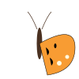

FeaturedUX / UI • Graphic Design
Bring Your Own Cup
A sustainability app that turned reusable cup habits into a reward — preventing 397 single-use cups from landfill.
Designing accessible, empathy-driven interfaces for users who depend on clarity — from mental health tools to social services software. Graduating Spring 2026.

A sustainability app that turned reusable cup habits into a reward — preventing 397 single-use cups from landfill.
Trauma-informed crisis care tool for assault survivors — AI-guided triage, offline-first emergency access, and a UI designed to reduce cognitive load under extreme stress.
Accessibility-led UX research for a social services organization — improving digital workflows for non-technical users navigating sensitive, high-stakes service interactions.
Accessibility-led UX research for a social services organization — improving digital workflows for non-technical users navigating sensitive, high-stakes service interactions.
Accessibility-first mobile UX built around cognitive load reduction — tiered task architecture and single-purpose screens designed so that neurodiverse users (and anyone under pressure) never feel lost.
A mental wellness tool giving users granular, privacy-first control over their digital environment — all preferences stored locally, zero data sent to any server.
Level design and visual assets for a 2D corporate espionage puzzle game.
4M+ results on a $15K budget — beating the $0.80 industry CPC with campaigns as low as $0.21 per click.
Board member overseeing the volunteer portfolio — recruited 6 volunteers for events in 2026, designed the annual report for two consecutive years, and produced all chapter event videos for the CPRS Vancouver Instagram.
View Annual Report ↗Identity system for SFU student life — logo, type, and merchandise guidelines.
Design for community transparency and accountability.
Download PDF ↗Coast Salish-inspired illustration navigating cultural research, corporate review, and print production for 500+ recipients.
Expanding the visual identity for community outreach.
Short video produced for VACFSS documenting the annual cedar headband making workshop — filmed, edited, and published as part of the communications role.
Staff spotlight interview with Elder April Bennett — honouring 28 years of restorative practice and community leadership at VACFSS.
Published article for VACFSS covering the annual youth transition ceremony — written and photographed on-site as part of the communications role.
Open to UX, communications, and design roles — graduating Spring 2026.
Get in Touch